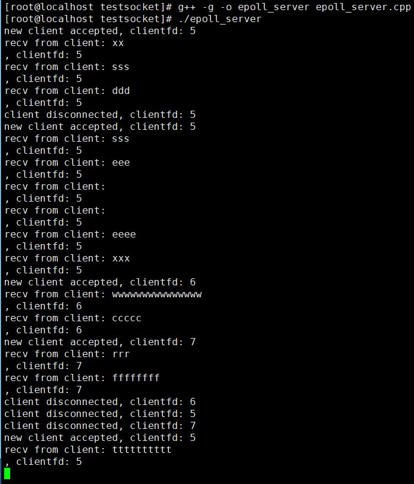

Linux epoll 模型（含LT 模式和 ET 模式详解）
综合 select 和 poll 的一些优缺点，Linux 从内核 2.6 版本开始引入了更高效的 epoll 模型，本节我们来详细介绍 epoll 模型。
要想使用 epoll 模型，必须先需要创建一个 epollfd，这需要使用 epoll_create 函数去创建：
#include <sys/epoll.h>
int epoll_create(int size);
参数 size 从 Linux 2.6.8 以后就不再使用，但是必须设置一个大于 0 的值。epoll_create 函数调用成功返回一个非负值的 epollfd，调用失败返回 -1。
有了 epollfd 之后，我们需要将我们需要检测事件的其他 fd 绑定到这个 epollfd 上，或者修改一个已经绑定上去的 fd 的事件类型，或者在不需要时将 fd 从 epollfd 上解绑，这都可以使用 epoll_ctl 函数：
int epoll_ctl(int epfd, int op, int fd, struct epoll_event* event);
参数说明：
参数 epfd 即上文提到的 epollfd；
参数 op，操作类型，取值有 EPOLL_CTL_ADD、EPOLL_CTL_MOD 和 EPOLL_CTL_DEL，分别表示向 epollfd 上添加、修改和移除一个其他 fd，当取值是 EPOLL_CTL_DEL，第四个参数 event 忽略不计，可以设置为 NULL；
参数 fd，即需要被操作的 fd；
参数 event，这是一个 epoll_event 结构体的地址，epoll_event 结构体定义如下：
struct epoll_event { uint32_t events; /* 需要检测的 fd 事件，取值与 poll 函数一样 */ epoll_data_t data; /* 用户自定义数据 */ };epoll_event 结构体的 data 字段的类型是 epoll_data_t，我们可以利用这个字段设置一个自己的自定义数据，它本质上是一个 Union 对象，在 64 位操作系统中其大小是 8 字节，其定义如下：
typedef union epoll_data { void* ptr; int fd; uint32_t u32; uint64_t u64; } epoll_data_t;函数返回值：epoll_ctl 调用成功返回 0，调用失败返回 -1，你可以通过 errno 错误码获取具体的错误原因。
创建了 epollfd，设置好某个 fd 上需要检测事件并将该 fd 绑定到 epollfd 上去后，我们就可以调用 epoll_wait 检测事件了，epoll_wait 函数签名如下：
int epoll_wait(int epfd, struct epoll_event* events, int maxevents, int timeout);
参数的形式和 poll 函数很类似，参数 events 是一个 epoll_event 结构数组的首地址，这是一个输出参数，函数调用成功后，events 中存放的是与就绪事件相关 epoll_event 结构体数组；参数 maxevents 是数组元素的个数；timeout 是超时时间，单位是毫秒，如果设置为 0，epoll_wait 会立即返回。
当 epoll_wait 调用成功会返回有事件的 fd 数目；如果返回 0 表示超时；调用失败返回 -1。
epoll_wait 使用示例如下：
while (true)
{
epoll_event epoll_events[1024];
int n = epoll_wait(epollfd, epoll_events, 1024, 1000);
if (n < 0)
{
//被信号中断
if (errno == EINTR)
continue;
//出错，退出
break;
}
else if (n == 0)
{
//超时，继续
continue;
}
for (size_t i = 0; i < n; ++i)
{
// 处理可读事件
if (epoll_events[i].events & POLLIN)
{
}
// 处理可写事件
else if (epoll_events[i].events & POLLOUT)
{
}
//处理出错事件
else if (epoll_events[i].events & POLLERR)
{
}
}
}
epoll_wait 与 poll 的区别
通过前面介绍 poll 与 epoll_wait 函数的介绍，我们可以发现：
epoll_wait 函数调用完之后，我们可以直接在 event 参数中拿到所有有事件就绪的 fd，直接处理即可（event 参数仅仅是个出参）；而 poll 函数的事件集合调用前后数量都未改变，只不过调用前我们通过 pollfd 结构体的 events 字段设置待检测事件，调用后我们需要通过 pollfd 结构体的 revents 字段去检测就绪的事件（ 参数 fds 既是入参也是出参）。
举个生活中的例子，某人不断给你一些苹果，这些苹果有生有熟，调用 epoll_wait 相当于：
1. 你把苹果挨个投入到 epoll 机器中(调用 epoll_ctl);
2. 调用 epoll_wait 加工，你直接通过另外一个袋子就能拿到所有熟苹果。
调用 poll 相当于：
1. 把收到的苹果装入一个袋子里面然后调用 poll 加工；
2. 调用结束后，拿到原来的袋子，袋子中还是原来那么多苹果，只不过熟苹果被贴上了标签纸，你还是需要挨个去查看标签纸挑选熟苹果。
当然，这并不意味着，poll 函数的效率不如 epoll_wait，一般在 fd 数量比较多，但某段时间内，就绪事件 fd 数量较少的情况下，epoll_wait 才会体现出它的优势，也就是说 socket 连接数量较大时而活跃连接较少时 epoll 模型更高效。
LT 模式和 ET 模式
与 poll 的事件宏相比，epoll 新增了一个事件宏 EPOLLET，这就是所谓的边缘触发模式（Edge Trigger，ET），而默认的模式我们称为 水平触发模式（Level Trigger，LT）。这两种模式的区别在于：
- 对于水平触发模式，一个事件只要有，就会一直触发；
- 对于边缘触发模式，只有一个事件从无到有才会触发。
这两个词汇来自电学术语，你可以将 fd 上有数据认为是高电平，没有数据认为是低电平，将 fd 可写认为是高电平，fd 不可写认为是低电平。那么水平模式的触发条件是状态处于高电平，而边缘模式是状态改为高电平，即：
水平模式的触发条件
1. 低电平 => 高电平
2. 高电平 => 高电平
边缘模式的触发条件
1. 低电平 => 高电平
说的有点抽象，以 socket 的读事件为例，对于水平模式，只要 socket 上有未读完的数据，就会一直产生 POLLIN 事件；而对于边缘模式，socket 上第一次有数据会触发一次，后续 socket 上存在数据也不会再触发，除非把数据读完后，再次产生数据才会继续触发。对于 socket 写事件，如果 socket 的 TCP 窗口一直不饱和，会一直触发 POLLOUT 事件；而对于边缘模式，只会触发一次，除非 TCP 窗口由不饱和变成饱和再一次变成不饱和，才会再次触发 POLLOUT 事件。
socket 可读事件水平模式触发条件：
1. socket上无数据 => socket上有数据
2. socket上有数据 => socket上有数据
socket 可读事件边缘模式触发条件：
1. socket上无数据 => socket上有数据
socket 可写事件水平模式触发条件：
1. socket可写 => socket可写
2. socket不可写 => socket可写
socket 可写事件边缘模式触发条件：
1. socket不可写 => socket可写
也就是说，如果对于一个非阻塞 socket，如果使用 epoll 边缘模式去检测数据是否可读，触发可读事件以后，一定要一次性把 socket 上的数据收取干净才行，也就是一定要循环调用 recv 函数直到 recv 出错，错误码是EWOULDBLOCK（EAGAIN 一样）；如果使用水平模式，则不用，你可以根据业务一次性收取固定的字节数，或者收完为止。边缘模式下收取数据的代码示例如下：
bool TcpSession::RecvEtMode()
{
//每次只收取256个字节
char buff[256];
while (true)
{
int nRecv = ::recv(clientfd_, buff, 256, 0);
if (nRecv == -1)
{
if (errno == EWOULDBLOCK)
return true;
else if (errno == EINTR)
continue;
return false;
}
//对端关闭了socket
else if (nRecv == 0)
return false;
inputBuffer_.add(buff, (size_t)nRecv);
}
return true;
}
最后，我们来看一个 epoll 模型的完整例子：
/**
* 演示 epoll 通信模型，epoll_server.cpp
* zhangyl 2019.03.16
*/
#include <sys/types.h>
#include <sys/socket.h>
#include <arpa/inet.h>
#include <unistd.h>
#include <fcntl.h>
#include <sys/epoll.h>
#include <poll.h>
#include <iostream>
#include <string.h>
#include <vector>
#include <errno.h>
int main(int argc, char* argv[])
{
//创建一个侦听socket
int listenfd = socket(AF_INET, SOCK_STREAM, 0);
if (listenfd == -1)
{
std::cout << "create listen socket error." << std::endl;
return -1;
}
//将侦听socket设置为非阻塞的
int oldSocketFlag = fcntl(listenfd, F_GETFL, 0);
int newSocketFlag = oldSocketFlag | O_NONBLOCK;
if (fcntl(listenfd, F_SETFL, newSocketFlag) == -1)
{
close(listenfd);
std::cout << "set listenfd to nonblock error." << std::endl;
return -1;
}
//初始化服务器地址
struct sockaddr_in bindaddr;
bindaddr.sin_family = AF_INET;
bindaddr.sin_addr.s_addr = htonl(INADDR_ANY);
bindaddr.sin_port = htons(3000);
if (bind(listenfd, (struct sockaddr *)&bindaddr, sizeof(bindaddr)) == -1)
{
std::cout << "bind listen socket error." << std::endl;
close(listenfd);
return -1;
}
//启动侦听
if (listen(listenfd, SOMAXCONN) == -1)
{
std::cout << "listen error." << std::endl;
close(listenfd);
return -1;
}
//复用地址和端口号
int on = 1;
setsockopt(listenfd, SOL_SOCKET, SO_REUSEADDR, (char *)&on, sizeof(on));
setsockopt(listenfd, SOL_SOCKET, SO_REUSEPORT, (char *)&on, sizeof(on));
//创建epollfd
int epollfd = epoll_create(1);
if (epollfd == -1)
{
std::cout << "create epollfd error." << std::endl;
close(listenfd);
return -1;
}
epoll_event listen_fd_event;
listen_fd_event.events = POLLIN;
listen_fd_event.data.fd = listenfd;
//将侦听socket绑定到epollfd上去
if(epoll_ctl(epollfd, EPOLL_CTL_ADD, listenfd, &listen_fd_event) == -1)
{
std::cout << "epoll_ctl error." << std::endl;
close(listenfd);
return -1;
}
int n;
while (true)
{
epoll_event epoll_events[1024];
n = epoll_wait(epollfd, epoll_events, 1024, 1000);
if (n < 0)
{
//被信号中断
if (errno == EINTR)
continue;
//出错，退出
break;
}
else if (n == 0)
{
//超时，继续
continue;
}
for (size_t i = 0; i < n; ++i)
{
// 事件可读
if (epoll_events[i].events & POLLIN)
{
if (epoll_events[i].data.fd == listenfd)
{
//侦听socket，接受新连接
struct sockaddr_in clientaddr;
socklen_t clientaddrlen = sizeof(clientaddr);
//接受客户端连接, 并加入到fds集合中
int clientfd = accept(listenfd, (struct sockaddr *)&clientaddr, &clientaddrlen);
if (clientfd != -1)
{
//将客户端socket设置为非阻塞的
int oldSocketFlag = fcntl(clientfd, F_GETFL, 0);
int newSocketFlag = oldSocketFlag | O_NONBLOCK;
if (fcntl(clientfd, F_SETFL, newSocketFlag) == -1)
{
close(clientfd);
std::cout << "set clientfd to nonblock error." << std::endl;
}
else
{
epoll_event client_fd_event;
client_fd_event.events = POLLIN;
client_fd_event.data.fd = clientfd;
if(epoll_ctl(epollfd, EPOLL_CTL_ADD, clientfd, &client_fd_event) != -1)
{
std::cout << "new client accepted, clientfd: " << clientfd << std::endl;
}
else
{
std::cout << "add client fd to epollfd error." << std::endl;
close(clientfd);
}
}
}
}
else
{
//普通clientfd,收取数据
char buf[64] = { 0 };
int m = recv(epoll_events[i].data.fd, buf, 64, 0);
if (m == 0)
{
//对端关闭了连接，从epollfd上移除clientfd
if(epoll_ctl(epollfd, EPOLL_CTL_DEL, epoll_events[i].data.fd, NULL) != -1)
{
std::cout << "client disconnected, clientfd: " << epoll_events[i].data.fd << std::endl;
}
close(epoll_events[i].data.fd);
}
else if (m < 0)
{
//出错，从epollfd上移除clientfd
if (errno != EWOULDBLOCK && errno != EINTR)
{
if(epoll_ctl(epollfd, EPOLL_CTL_DEL, epoll_events[i].data.fd, NULL) != -1)
{
std::cout << "client disconnected, clientfd: " << epoll_events[i].data.fd << std::endl;
}
close(epoll_events[i].data.fd);
}
}
else
{
//正常收到数据
std::cout << "recv from client: " << buf << ", clientfd: " << epoll_events[i].data.fd << std::endl;
}
}
}
else if (epoll_events[i].events & POLLERR)
{
//TODO: 暂且不处理
}
}// end outer-for-loop
}// end while-loop
//关闭侦听socket
//（理论上应该关闭包括所有clientfd在内的fd，但这里只是为了演示问题，就不写额外的代码来处理啦）
close(listenfd);
return 0;
}
编译上述程序生成 epoll_server 并启动，然后使用 nc 命令启动三个客户端给服务器发数据效果如下图所示：
